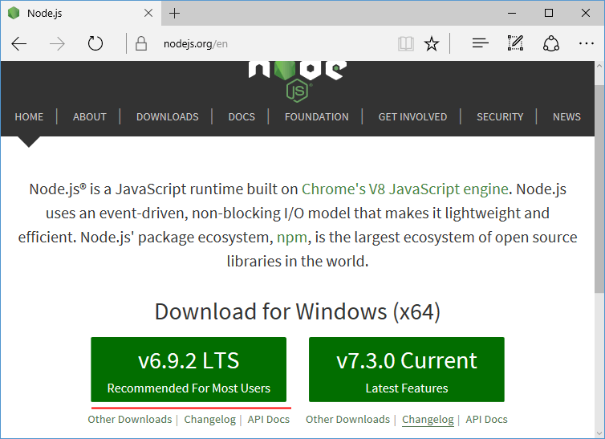

Что такое Node JS
Node.js представляет среду выполнения кода на JavaScript, которая построена на основе движка JavaScript Chrome V8, который позволяет транслировать вызовы на языке JavaScript в машинный код.
Node.js прежде всего предназначен для создания серверных приложений на языке JavaScript.
Хотя также существуют проекты по написанию десктопных приложений (Electron) и даже по созданию кода для микроконтроллеров.
Но прежде всего мы говорим о Node.js, как о платформе для создания веб-приложений.
Node.js является открытым проектом, исходники которого можно посмотреть на github.com.
Установка
Для загрузки перейдет на официальный сайт https://nodejs.org/en/.
На главной странице мы сразу увидим две возможные опции для загрузки: самая последняя версия NodeJS и LTS-версия.
Загрузим LTS-версию.
В моем случае это версия 6.9.2.
Для Windows установщик представляет файл с расширением msi.
После запуска откроется программа установщика:

Инструменты разработки
Для разработки под Node JS достаточно простейшего текстового редактора, в частности, Notepad++.
Также можно использовать более изощренные редакторы типа Atom, Sublime, Visual Studio Code, либо среды разработки, которые поддерживают работу с Node.JS, например, Visual Studio или WebStorm.
REPL
После установки NodeJS нам становится доступным такой инструмент как REPL.
REPL (Read Event Printed Loop) представляет возможность запуска выражений на языке JavaScript в командной строке или терминале.
Так, запустим командную строку (на Windows) или терминал (на OS X или Linux) и введем команду node.
После ввода этой команды мы можем выполнять различные выражения на JavaScript:
C:\WINDOWS\system32>node
> 2+6
8
>
Или используем какую-нибудь функцию JS:
> console.log("Hello NodeJS");
Hello NodeJS
undefined
>
Можно определять свои функции и затем их вызывать, например, возведение числа в квадрат:
> function sqrt(x){return x * x;}
undefined
>sqrt(5)
25
>
Если мы введем что-то неправильно, то REPL укажет об ошибке:

Выполнение файла
Вместо того чтобы вводить весь код напрямую в консоль, удобнее вынести его во внешний файл.
Например, создадим на жестком диске новый каталог helloapp, в который поместим новый файл app.js со следующим кодом:
console.log("Hello world");
В командной строке перейдем с помощью команды cd к каталогу helloapp, а затем выполним команду:
node app.js
Данная команда выполнит код из файла app.js: